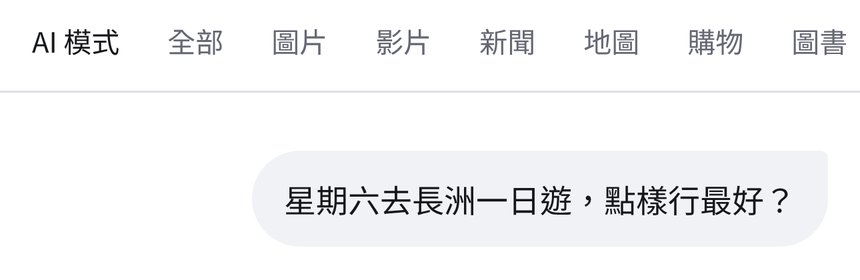
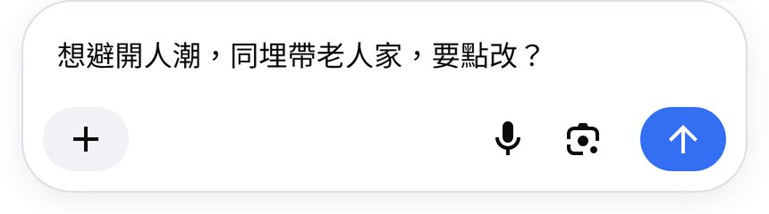
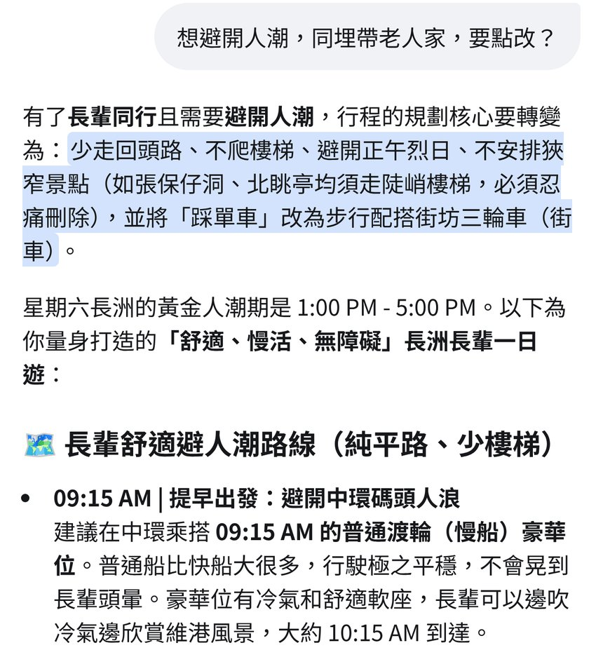

跟 Reel 用 Google 搜尋「AI 模式」：先問星期六長洲一日遊點行，再喺底部輸入框追問「想避開人潮，同埋帶老人家，要點改？」，AI 會照住追問改寫成純平路、少樓梯、避開人潮嘅路線。附真實畫面截圖、可抄追問句，同船期、人潮要以官方同現場為準嘅提醒。
Reel 一句講晒：行程唔合唔使重問，AI 模式追問一句即改好
你會學到
- 點樣喺 Google 搜尋結果頂撳「AI 模式」分頁
- 唔使重新問，喺底部輸入框追問一句加條件
- 點樣睇改寫後嘅路線，同出發前對返船期同現場情況
開始前準備
- 手機或電腦開 google.com（示範用香港、繁體中文介面，冇登入）
- 想去嘅地方同日子（例：星期六長洲一日遊）
- 諗定同行者有咩限制（老人家、BB 車、唔想行樓梯），追問時講清楚
3 步做法
撳 AI 模式：google.com 打「星期六去長洲一日遊，點樣行最好？」，撳搜尋結果頂嘅「AI 模式」分頁，出第一版路線同時間表。
官方說明：喺 google.com 搜尋列打問題再撳 AI 模式（AI Mode），或者直接去 google.com/ai。示範畫面「AI 模式」排喺分頁列最左。
第一版答案通常係一般遊客路線（示範：先西後東、建議 10 點前到中環 5 號碼頭），未必啱你同行嘅人，下一步先追問。

真實畫面（2026-10-06 自行截圖）：分頁列最左係「AI 模式」，下面係第一條問題。 打追問撳傳送：唔使重新問，喺底部輸入框打「想避開人潮，同埋帶老人家，要點改？」，撳藍色箭咀傳送。
官方說明：要追問，喺畫面底部嘅輸入框（Ask anything）繼續打就得；追問會接住同一個話題，唔使再打長洲、星期六。
示範畫面輸入框右邊有語音咪、Lens（相機）同藍色箭咀傳送掣；介面可能更新，以你畫面為準。

真實畫面（2026-10-06 自行截圖）：追問打好，撳右邊藍色箭咀傳送。 睇避人潮路線：AI 會照住追問改寫：純平路、少樓梯，建議避開下晝 1–5 點人潮，改由較早嘅船班出發。
示範答案標題變成「長輩舒適避人潮路線（純平路、少樓梯）」，第一站改成 09:15 普通渡輪。「1–5 點人潮」係 AI 整理網上資料嘅建議，唔係官方統計。
船期以渡輪營辦商官方時間表為準，人潮以現場為準；AI 答案入面提到嘅店名唔係推介，截圖亦冇顯示任何店名。

真實畫面（2026-10-06 自行截圖）：追問後即改寫成避人潮、少樓梯嘅長輩路線。
可抄 Prompt
Reel 用嘅第一條問題
星期六去長洲一日遊，點樣行最好？
Reel 用嘅追問（喺底部輸入框打）
想避開人潮，同埋帶老人家，要點改？
改成推 BB 車
我哋要推 BB 車，盡量唔使行樓梯，同埋要有地方休息，要點改？
加時間限制
我哋下晝 3 點前要返到中環，要點改？船班時間幫我標明要自己再核對。
常見錯誤／注意事項
- 每次都重新問：喺同一個 AI 模式畫面底部追問就得，佢會接住上一個答案改，唔使重打成條問題。
- 追問講得太闊：講清楚限制（帶老人家、唔想行樓梯、幾點前要走），改出嚟先啱用。
- 當船期／人潮係事實：船班時間以渡輪營辦商官方時間表為準，人潮以現場為準；AI 可能出錯。
- 當食肆推介：AI 答案入面嘅店名只係網上資料整理，唔係我哋推介。
香港用戶留意
Google 官方說明頁（2026-10-05 查）寫明 AI Mode 支援地區包括 Hong Kong，支援語言包括 Chinese (Traditional)，即香港＋繁體中文已支援。個別進階功能（例如 Gemini 3 Pro in AI Mode）可能只限英文／訂閱，以你畫面為準。
官方說明
- Get AI-powered responses with AI Mode in Google Search（Google Search Help）
2026-10-05 核實：AI Mode 支援地區包括 Hong Kong；支援語言包括 Chinese (Traditional)；說明點樣喺搜尋結果撳 AI Mode、用 Ask anything 問問題
（以上連結當日逐條打開核對；介面同額度可能更新，以官方為準）
原帖
睇原 Reel ↗（2026-10-07 發佈）